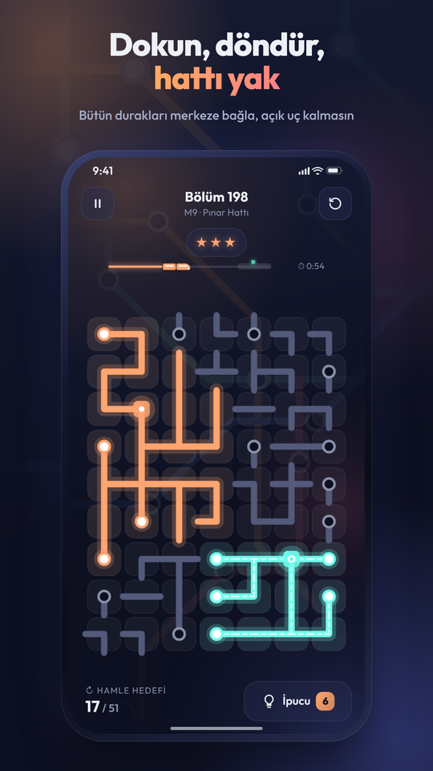
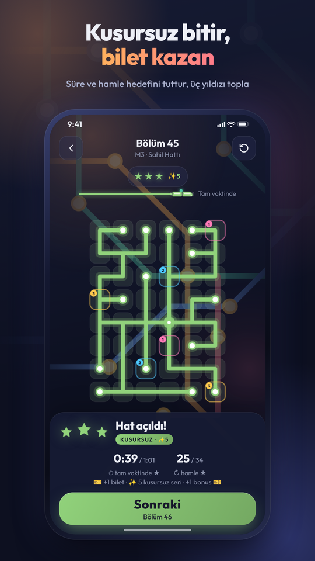
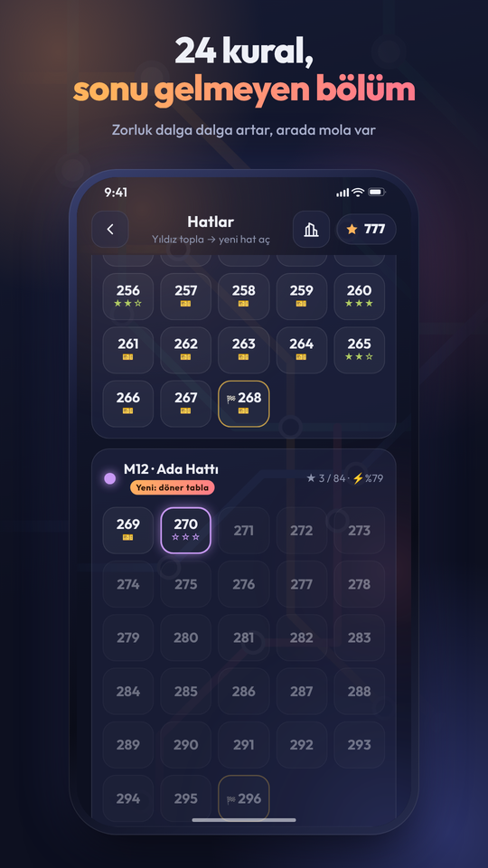
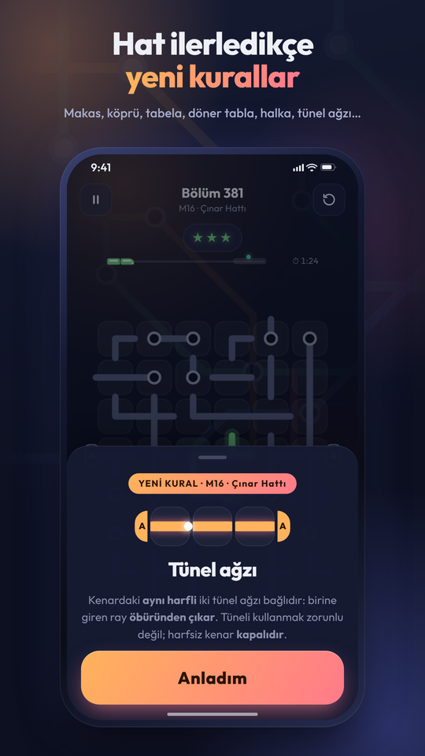
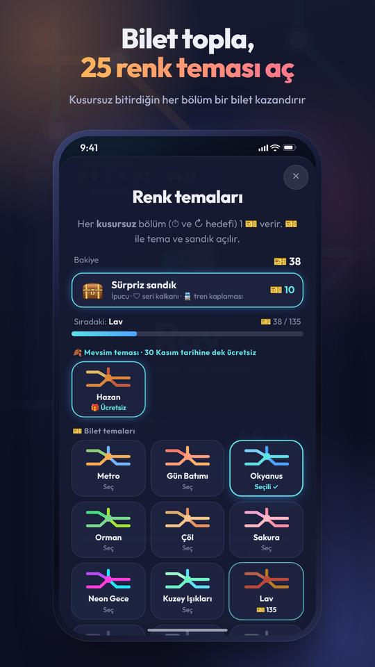
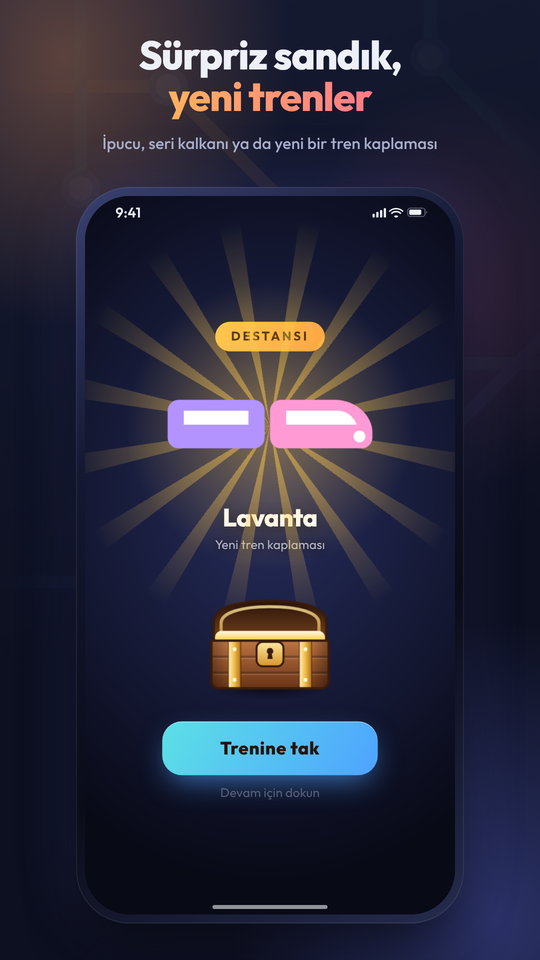

Ray
Metro Bulmaca
Karoya dokun, ray 90° dönsün. Merkez istasyondan çıkan hattı bütün duraklara bağla; hat bağlandıkça şehir ışıl ışıl yanar. Tek elle, internetsiz, kendi hızında.
- Google Play’de test aşamasında
- Yakında App Store’da

Nasıl oynanır
-
Dokun, döndür
Bir karoya dokun; üzerindeki ray 90° döner.
-
Hattı bağla
Merkez istasyondan çıkan hattı bütün duraklara ulaştır.
-
Açık uç bırakma
Hiçbir ray boşa çıkmasın. Hat kapandığında şehir ışıl ışıl yanar.
İçinde neler var
-
24 kural
Makas, köprü, tünel ağzı, döner tabla, nehir, kayan sıra ve dahası. Hat ilerledikçe yeni bir kural açılır.
-
Sonu gelmeyen bölümler
Zorluk dalga dalga artar, arada nefes aldıran kolay hatlar gelir.
-
Günün Hattı
Her gün herkes için aynı bulmaca. Cumartesi altıgen tahta, pazar haftanın kuralı.
-
Renk temaları
Kusursuz bitirdiğin bölümler bilet kazandırır; biletlerle 25 renk teması açılır.
-
Sürpriz sandık
İçinden ipucu, seri kalkanı ya da yeni bir tren kaplaması çıkabilir.
-
Günlük ve haftalık görevler
Kısa oturumlar için küçük hedefler; her gün ve her hafta yenilenir.
Ekran görüntüleri

Dokun, döndür, hattı yak 
Ana ekran ve Günün Hattı 
Kusursuz bitir, bilet kazan 
24 kural, sonu gelmeyen bölüm 
Yeni kural: tünel ağzı 
25 renk teması 
Sürpriz sandık, yeni trenler
Bilinmesi gerekenler
- Fiyat
- Ücretsiz, reklamlı. İsteğe bağlı Reklamsız paket ve birkaç küçük paket var.
- Hesap ve veri
- Hesap yok. Kişisel veri istenmez. İlerlemen cihazında kalır.
- Bağlantı
- Tamamen internetsiz oynanır. Reklamlar yalnız internet varken çıkar.
- Diller
- Türkçe, İngilizce, Almanca, İspanyolca, Portekizce (Brezilya), Fransızca
- Platformlar
- Android, Google Play’de test aşamasında. iPhone yakında.